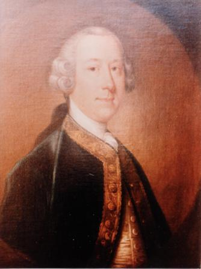
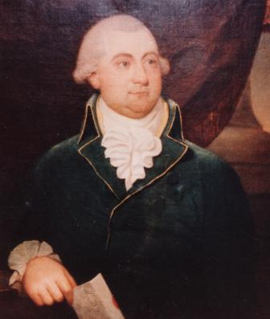
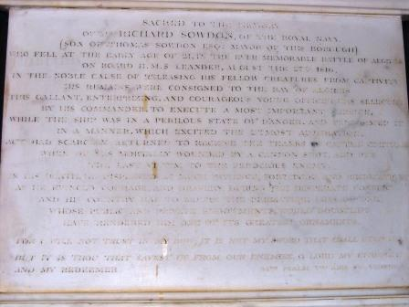
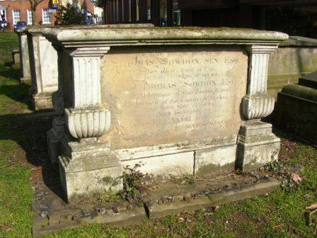

This extract is taken from the Reading Mercury dated 2 September 1916 by Mrs Cope.
Note: Although this extract has been taken from an original diary by Harry Wilson Sowdon the details were as accurate as HWS had reason to believe. Subsequent research by Sowdon family historians have shown inaccuracies in the diary and this extract - Paul I Marshall
If every one would compile a family record book, valuable information would be preserved for succeeding generations to study. The Sowdon family book is a model to follow; a large well-bound volume of manuscript with pictures and photographs between its pages, which add vastly to its interest. The name Sowdon comes from Devonshire and the derivation is from a Knight, Sir Rudulphus de Sowieton or Sowdon, who held the manor of Sowdon and whose origin is said to be Saxon. So far for tradition. The family afterwards resided at Whitstone near Exeter; the first entry in the parish register of Whitstone is that of Thomas Sowdon, who died in 1583, leaving property at Whitstone, the deeds of which exist to prove that it had been long in the possession of his family. His will was proved at Exeter in 1583. Tracing the family from parish records, tombs and tablets, they appear to have remained round the old neighbourhood in their own county of Devon at Whitstone and Alphington down to the 20th Century. It was not until the 19th century that the Sowdons came to Berkshire, when Thomas Sowdon, second son of John Sowdon of Alphington and Whitstone came to Reading about 1760. He was a wine and spirit merchant and lived at Camden House, Castle Street, Reading. He died in 1791. He was a magistrate for the counties, then combined, of Berks and Oxon. He is buried in the family vault in St. Mary's Churchyard. Let us hope that the memorial stone is in better condition than most of the graves in that churchyard, many of which are never re-cut or cleaned and are fast becoming illegible. Thomas Sowdon was 73 years of age at the time of his death. A younger brother of his was Richard Sowdon, the friend of Garrick, the celebrated actor. Richard Sowdon

John (not Richard) Sowdon, the actor and friend of Garrick
ran away from home, became an actor himself and built the Globe Theatre at Dublin.
Several interesting letters from Barry, the actor, and Garrick to Richard Sowdon are still in existence:
"`Tis all we can repay the dead, His merit to defend: Merit how great, if only said,. That Garrick was his friend"

Thomas Sowdon
After the marriage of Thomas Sowdon to Eleanor Smith, they went to reside at Hartley Court, the estate consisting of 120 acres of land and 20 acres of pleasure grounds. Hartley Court was originally an old manor house belonging to the Beke family and is now ( 20th Century ) in the possession of the Benyon family of Englefield, who have let it on lease to various tenants during the past 50 years or more. In 1816, his third son, Richard, was killed on board HMS Leander, on August 27th, at the siege of Algiers. A monument erected to his memory was placed in the Chancel of St. Mary's Church, Reading with this inscription:
"Sacred to the memory of Mr. Richard Sowdon, of the Royal Navy, son of Thomas Sowdon, Esq., of this Borough, who fell at the early age of 21 years in the ever memorable Battle of Algiers on board H.M. Ship Leander in the noble cause of releasing his fellow-creatures from captivity. His remains were consigned to the Bay of Algiers. "This Gallant, enterprising and courageous young officer was selected by his commander to execute a most important service when the ship was in a perilous state of danger, and performed it in a manner which excited the utmost admiration; but scarcely returned to receive the thanks of Captain Chatham when he was mortally wounded by a cannon shot, and was the last victim of the ferocious enemy. In his death, he displayed as much patience, fortitude and resignation as he evinced courage and bravery during the desperate conflict, and his country has to mourn one whose private and public endowments have rendered him one of its greatest ornaments. "For I will not trust in my bow: it is not my sword that shall help me: but it is Thou that savest us from our enemies, O Lord, my Strength and my Redeemer."
This monument was removed from the chancel and is now under the tower of St. Mary's Church.

Memorial to Richard Sowdon
Thomas Sowdon took great interest in the municipal life of the town of Reading, becoming mayor in 1817. A picture of him is in existence and a copy in amongst the pictures of the Mayors in the Town Hall, Reading. He had a numerous family, 13, baker's dozen, an unlucky number. He was senior alderman of the borough of Reading, and, like his father, a magistrate for the counties of Berks and Oxon. He died November 23rd, 1829 aged 63 years and is buried in the vault with his father in St. Mary's Churchyard.

Vault of Thomas Sowdon, Snr Alderman of the borough of
Reading, St Mary's Churchyard
Thomas Sowdon was succeeded in business by his two sons, Thomas Frederick and Harry Sowdon. Thomas Frederick Sowdon married Caroline, daughter of Charles Marsack, Esq., of Caversham Park, Oxon. (An interesting account of Colonel Marsack and his home has been recently published in the "Reading Mercury"). Harry Sowdon married Louisa Lomer, eldest daughter of Mr Wilson Lomer, of Southampton who lived to be 102 years of age. Harry Sowdon died at Swiss Villa, King's Road, Reading in 1860 and left two children, a son and a daughter. The son, William Henry Sowdon, after a good education, entered the Army, the 95th Regiment and died at Winchester in 1869. This sketch of the family is too brief to allow more minute details of the pedigree which are given in Mr. Sowdon's family book, or to allude to the interesting extracts from letters received from him on the subject. Let us hope that the family record book will be continued as an example, which other families may well copy. Old photographs exist, hidden away in albums; newspaper cuttings; we can all recall anecdotes heard in our youth - why not write them down for future generations, who would value them as heirlooms?
Further Sowdon family information can be read in one of Harry Wilson Sowdon's diaries.